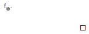

Table of Contents
- User's Guide
- Blocks
- Conditions
- Assemblies
- Regions
- Subregions
- Phases
- Species
- Connectors
- Characteristics
- Units
- Quantities
- Utilities
- Icons
Download
- Latest version (**Empty; please check back soon or contact kdavies4 at gmail.com.)

| Name | Description |
|---|---|
| Partial adapter for a phase between FCSys and Modelica |

| Type | Name | Description |
|---|---|---|
| FaceBus | face | FCSys face connector |
| HeatPort_b | heatPort | Modelica heat port |
partial model PartialPhase "Partial adapter for a phase between FCSys and Modelica" extends FCSys.Icons.Names.Top3; Connectors.FaceBus face "FCSys face connector"; Modelica.Thermal.HeatTransfer.Interfaces.HeatPort_b heatPort "Modelica heat port"; end PartialPhase;